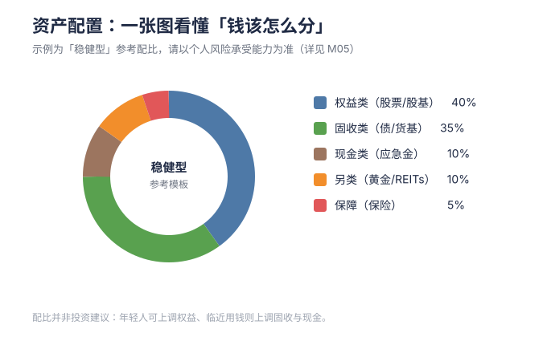

Diversification is the only free lunch in finance.
💡 本章为什么重要：本章绘制“资产地图”：不同资产就像不同食材，单吃一种会营养不良，合理搭配才能免费降低风险。
M01 · 资产地图与工具箱
学习目标：建立"钱能去哪"的全景图，理解每类资产的收益/风险/流动性三角，知道用什么账户装什么钱。 预计用时：35 分钟。
一、一张图看懂资产全景
把资产按"风险从低到高"排成一条光谱：
现金/货基 ── 债券/固收 ── 宽基指数 ── 行业/主动基金 ── 个股 ── 衍生品/加密
(稳) (猛)
- 越往左：越稳、流动性越好、收益越低
- 越往右：波动越大、可能亏本金、长期收益更高
没有"最好"的资产，只有"最适合你期限和风险"的组合。

二、五类资产速查表
| 类别 | 典型标的 | 预期年化* | 最大风险 | 流动性 | 适合装什么钱 |
|---|---|---|---|---|---|
| 现金/货基 | 活期、余额宝 | 1%–2% | 极低（输给通胀） | 即时 | 应急金、短期要用的 |
| 固收 | 存款、国债、纯债基金 | 2%–5% | 低（利率/信用风险） | 较好 | 1–3 年不用的 |
| 宽基权益 | 沪深300/纳指100 指数基金 | 6%–10%* | 中高（年化波动 15%–25%） | 好 | 3 年以上不用的 |
| 行业/主动 | 行业 ETF、主动基金 | 波动大 | 高（可能腰斩） | 好 | 能承受波动的"卫星"仓 |
| 个股/衍生品 | 单只股票、期权 | 不确定 | 极高（可归零） | 好 | 仅闲钱、且你真懂 |
*预期是长期历史区间，不是承诺。任何"保证收益 X%"都先当骗子看。
三、三个核心账户（分桶管理）
把"钱"按用途分开，才能既稳又赚：
- 应急桶（活钱）：3–6 个月支出，放活期/货基，随时能取。
- 保值桶（稳钱）：1–3 年不用的，放存款/债券/纯债基金，跑赢通胀即可。
- 增值桶（长钱）：3 年以上不用的，放指数基金等权益，吃复利。
绝大多数人亏钱，是因为把"增值桶"的钱误放进"应急桶"的期限里（短期要用却套在权益里，被迫割肉）。
四、工具箱：你真正需要的 App
不用下载一堆。核心就三类：
- 银行账户：工资、应急金、国债（柜台/网银）
- 基金平台：天天基金 / 蚂蚁 / 且慢 / 蛋卷 —— 买场外基金
- 证券账户：买 ETF、股票、打新（券商 App）
- 数据：中证/国证官网看指数估值；晨星看基金评级
不用开很多户。先有一个基金平台 + 一个证券账户就够入门。
五、关键概念：风险 ≠ 波动
很多人把"波动"和"风险"混为一谈。严格说：
- 波动（volatility）：价格上上下下，是常态，时间能熨平。
- 永久损失（permanent loss）：公司退市、杠杆爆仓、借钱炒到强平——这才是真风险。
期限越长，波动越不是风险；期限越短，波动越接近风险。 这解释了为什么"长钱才能投权益"。
六、本周行动清单 ✅
- [ ] 画一张自己的"三桶"表：每桶现在多少钱、装什么
- [ ] 检查应急桶是否 ≥ 3 个月支出
- [ ] 选定 1 个基金平台 + 1 个证券账户（不急着买）
七、下一步
→ M02 现金与固收：先把"稳的部分"讲透——货基、存款、债券怎么挑。
🌐 English Abstract
Topic: The asset map — where your money can actually go, and the toolkits you need.
Key takeaways: - Assets form a risk spectrum: cash → bonds → broad indexes → sector/active funds → single stocks → derivatives. - There is no single "best" asset — only the mix that fits your horizon and risk tolerance. - Manage money in three buckets: emergency (cash) / preservation (bonds) / growth (equity). - Risk ≠ volatility: volatility is temporary and time can smooth it; permanent loss (bankruptcy, leverage blow-up) is the real risk. - The longer your horizon, the less volatility behaves like risk.
Why it matters: Gives you the map before you ever pick a product — so you stop buying things whose risk you can't name.